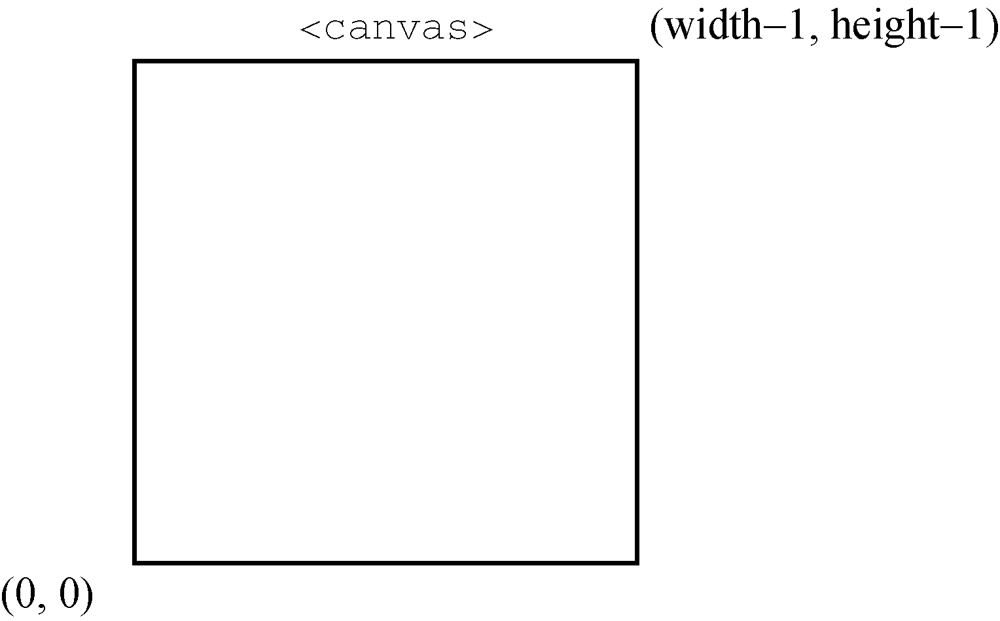
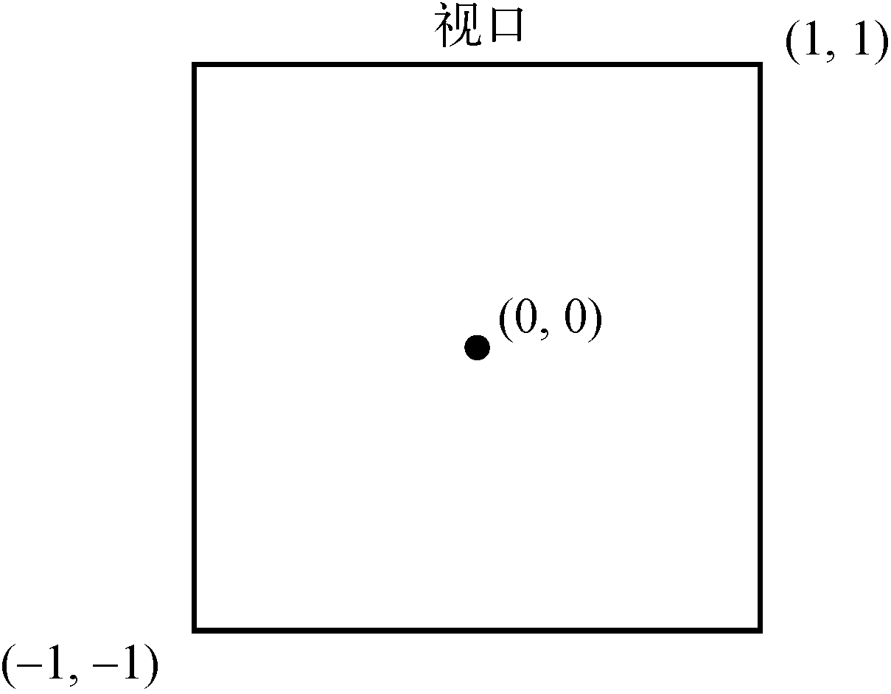
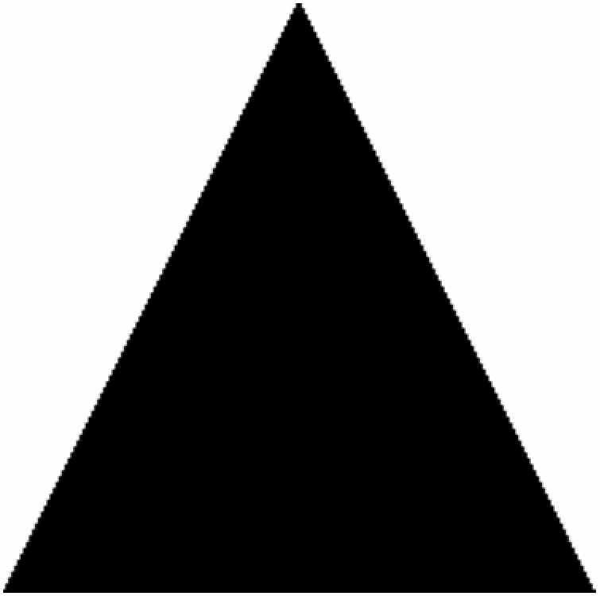
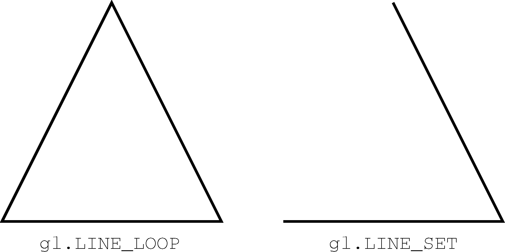

18.4 WebGL
WebGL是画布的3D上下文。与其他Web技术不同，WebGL不是W3C制定的标准，而是Khronos Group的标准。根据官网描述，“Khronos Group是非营利性、会员资助的联盟，专注于多平台和设备下并行计算、图形和动态媒体的无专利费开放标准”。Khronos Group也制定了其他图形API，包括作为浏览器中WebGL基础的OpenGL ES 2.0。
OpenGL这种3D图形语言很复杂，本书不会涉及过多相关概念。不过，要使用WebGL最好熟悉OpenGL ES 2.0，因为很多概念可以照搬过来。
本节假设读者了解OpenGL ES 2.0的基本概念，并简单介绍OpenGL ES 2.0在WebGL中实现的部分。要了解关于OpenGL的更多信息，可以访问OpenGL网站。另外，推荐一个WebGL教程网站：Learn WebGL。
注意 定型数组是在WebGL中执行操作的重要数据结构。第6章中讨论了定型数组。
18.4.1 WebGL上下文
在完全支持的浏览器中，WebGL 2.0上下文的名字叫"webgl2"，WebGL 1.0上下文的名字叫"webgl1"。如果浏览器不支持WebGL，则尝试访问WebGL上下文会返回null。在使用上下文之前，应该先检测返回值是否存在：
let drawing = document.getelementbyid("drawing");
// 确保浏览器支持<canvas>
if (drawing.getcontext) {
let gl = drawing.getcontext("webgl");
if (gl){
// 使用webgl
}
}这里把WebGL
context对象命名为gl。大多数WebGL应用和例子遵循这个约定，因为OpenGL ES 2.0方法和值通常以"gl"开头。这样可以让JavaScript代码看起来更接近OpenGL程序。
18.4.2 WebGL基础
取得WebGL上下文后，就可以开始3D绘图了。如前所述，因为WebGL是OpenGL ES 2.0的Web版，所以本节讨论的概念实际上是JavaScript所实现的OpenGL概念。
可以在调用getContext()取得WebGL上下文时指定一些选项。这些选项通过一个参数对象传入，选项就是参数对象的一个或多个属性。
-
alpha：布尔值，表示是否为上下文创建透明通道缓冲区，默认为true。 -
depth：布尔值，表示是否使用16位深缓冲区，默认为true。 -
stencil：布尔值，表示是否使用8位模板缓冲区，默认为false。 -
antialias：布尔值，表示是否使用默认机制执行抗锯齿操作，默认为true。 -
premultipliedAlpha：布尔值，表示绘图缓冲区是否预乘透明度值，默认为true。 -
preserveDrawingBuffer：布尔值，表示绘图完成后是否保留绘图缓冲区，默认为false。建议在充分了解这个选项的作用后再自行修改，因为这可能会影响性能。
可以像下面这样传入options对象：
let drawing = document.getelementbyid("drawing");
// 确保浏览器支持<canvas>
if (drawing.getcontext) {
let gl = drawing.getcontext("webgl", { alpha: false });
if (gl) {
// 使用webgl
}
}这些上下文选项大部分适合开发高级功能。多数情况下，默认值就可以满足要求。
如果调用getContext()不能创建WebGL上下文，某些浏览器就会抛出错误。为此，最好把这个方法调用包装在try/catch块中：
insert iconmargin [download]let drawing = document.getelementbyid("drawing"),
gl;
// 确保浏览器支持<canvas>
if (drawing.getcontext) {
try {
gl = drawing.getcontext("webgl");
} catch (ex) {
// 什么也不做
}
if (gl) {
// 使用webgl
} else {
alert("webgl context could not be created.");
}
}-
常量
如果你熟悉OpenGL，那么可能知道用于操作的各种常量。这些常量在OpenGL中的名字以
GL_开头。在WebGL中，context对象上的常量则不包含GL_前缀。例如，GL_COLOR_BUFFER_BIT常量在WebGL中要这样访问gl.COLOR_BUFFER_BIT。WebGL以这种方式支持大部分OpenGL常量（少数常量不支持）。
-
方法命名
OpenGL（同时也是WebGL）中的很多方法会包含相关的数据类型信息。接收不同类型和不同数量参数的方法，会通过方法名的后缀体现这些信息。表示参数数量的数字（1~4）在先，表示数据类型的字符串（“f”表示浮点数，“i”表示整数）在后。比如，
gl.uniform4f()的意思是需要4个浮点数值参数，而gl.uniform3i()表示需要3个整数值参数。还有很多方法接收数组，这类方法用字母“v”（vector）来表示。因此，
gl.uniform3iv()就是要接收一个包含3个值的数组参数。在编写WebGL代码时，要记住这些约定。
-
准备绘图
准备使用WebGL上下文之前，通常需要先指定一种实心颜色清除
<canvas>。为此，要调用clearColor()方法并传入4个参数，分别表示红、绿、蓝和透明度值。每个参数必须是0~1范围内的值，表示各个组件在最终颜色的强度。比如：gl.clearcolor(0, 0, 0, 1); // 黑色 gl.clear(gl.color_buffer_bit);以上代码把清理颜色缓冲区的值设置为黑色，然后调用
clear()方法，这个方法相当于OpenGL中的glClear()方法。参数gl.COLOR_BUFFER_BIT告诉WebGL使用之前定义的颜色填充画布。通常，所有绘图操作之前都需要先清除绘制区域。
-
视口与坐标
绘图前还要定义WebGL视口。默认情况下，视口使用整个
<canvas>区域。要改变视口，可以调用viewport()方法并传入视口相对于<canvas>元素的 、
、 坐标及宽度和高度。例如，以下代码表示要使用整个
坐标及宽度和高度。例如，以下代码表示要使用整个<canvas>元素：gl.viewport(0, 0, drawing.width, drawing.height);这个视口的坐标系统与网页中通常的坐标系统不一样。视口的
和坐标起点(0, 0)表示<canvas>元素的左下角，向上、向右增长可以用点(width–1, height–1)定义（见图18-14）。
图 18-14
知道如何定义视口就可以只使用
<canvas>元素的一部分来绘图。比如下面的例子：// 视口是<canvas> 左下角四分之一区域 gl.viewport(0, 0, drawing.width/2, drawing.height/2); // 视口是<canvas> 左上角四分之一区域 gl.viewport(0, drawing.height/2, drawing.width/2, drawing.height/2); // 视口是<canvas> 右下角四分之一区域 gl.viewport(drawing.width/2, 0, drawing.width/2, drawing.height/2);定义视口的坐标系统与视口中的坐标系统不一样。在视口中，坐标原点(0, 0)是视口的中心点。左下角是(–1, –1)，右上角是(1, 1)，如图18-15所示。

图 18-15
如果绘图时使用了视口外部的坐标，则绘制结果会被视口剪切。例如，要绘制的形状有一个顶点在(1, 2)，则视口右侧的图形会被切掉。
-
缓冲区
在JavaScript中，顶点信息保存在定型数组中。要使用这些信息，必须先把它们转换为WebGL缓冲区。创建缓冲区要调用
gl.createBuffer()方法，并使用gl.bindBuffer()方法将缓冲区绑定到WebGL上下文。绑定之后，就可以用数据填充缓冲区了。比如：let buffer = gl.createbuffer(); gl.bindbuffer(gl.array_buffer, buffer); gl.bufferdata(gl.array_buffer, new float32array([0, 0.5, 1]), gl.static_draw);调用
gl.bindBuffer()将buffer设置为上下文的当前缓冲区。然后，所有缓冲区操作都在buffer上直接执行。因此，调用gl.bufferData()虽然没有包含对buffer的直接引用，但仍然是在它上面执行的。上面最后一行代码使用一个Float32Array（通常把所有顶点信息保存在Float32Array中）初始化了buffer。如果想输出缓冲区内容，那么可以调用drawElements()方法并传入gl.ELEMENT_ARRAY_BUFFER。gl.bufferData()方法的最后一个参数表示如何使用缓冲区。这个参数可以是以下常量值。-
gl.STATIC_DRAW：数据加载一次，可以在多次绘制中使用。 -
gl.STREAM_DRAW：数据加载一次，只能在几次绘制中使用。 -
gl.DYNAMIC_DRAW：数据可以重复修改，在多次绘制中使用。
除非是很有经验的OpenGL程序员，否则我们会对大多数缓冲区使用
gl.STATIC_DRAW。缓冲区会一直驻留在内存中，直到页面卸载。如果不再需要缓冲区，那么最好调用
gl.deleteBuffer()方法释放其占用的内存：gl.deletebuffer(buffer); -
-
错误
与JavaScript多数情况下不同的是，在WebGL操作中通常不会抛出错误。必须在调用可能失败的方法后，调用
gl.getError()方法。这个方法返回一个常量，表示发生的错误类型。下面列出了这些常量。-
gl.NO_ERROR：上一次操作没有发生错误（0值）。 -
gl.INVALID_ENUM：上一次操作没有传入WebGL预定义的常量。 -
gl.INVALID_VALUE：上一次操作需要无符号数值，但是传入了负数。 -
gl.INVALID_OPERATION：上一次操作在当前状态下无法完成。 -
gl.OUT_OF_MEMORY：上一次操作因内存不足而无法完成。 -
gl.CONTEXT_LOST_WEBGL：上一次操作因外部事件（如设备掉电）而丢失了WebGL上下文。
每次调用
gl.getError()方法会返回一个错误值。第一次调用之后，再调用gl.getError()可能会返回另一个错误值。如果有多个错误，则可以重复这个过程，直到gl.getError()返回gl.NO_ERROR。如果执行了多次操作，那么可以通过循环调用getError()：let errorcode = gl.geterror(); while (errorcode) { console.log("error occurred: " + errorcode); errorcode = gl.geterror(); }如果WebGL代码没有产出想要的输出结果，那么可以调用几次
getError()，这样有可能帮你找到问题所在。
-
-
着色器
着色器是OpenGL中的另一个概念。WebGL中有两种着色器：顶点着色器和片段（或像素）着色器。顶点着色器用于把3D顶点转换为可以渲染的2D点。片段着色器用于计算绘制一个像素的正确颜色。WebGL着色器的独特之处在于，它们不是JavaScript实现的，而是使用一种与C或JavaScript完全不同的语言GLSL（OpenGL Shading Language）写的。
-
编写着色器
GLSL是一种类似于C的语言，专门用于编写OpenGL着色器。因为WebGL是OpenGL ES 2的实现，所以OpenGL中的着色器可以直接在WebGL中使用。这样也可以让桌面应用更方便地移植到Web上。
每个着色器都有一个
main()方法，在绘制期间会重复执行。给着色器传递数据的方式有两种：attribute和uniform。attribute用于将顶点传入顶点着色器，而uniform用于将常量值传入任何着色器。attribute和uniform是在main()函数外部定义的。在值类型关键字之后是数据类型，然后是变量名。下面是一个简单的顶点着色器的例子：// opengl着色器语言 // 着色器，摘自bartek drozdz的文章“get started with webgl—draw a square” attribute vec2 avertexposition; void main() { gl_position = vec4(avertexposition, 0.0, 1.0); }这个顶点着色器定义了一个名为
aVertexPosition的attribute。这个attribute是一个包含两项的数组（数据类型为vec2），代表和坐标。即使只传入了两个坐标，顶点着色器返回的值也会包含4个元素，保存在变量gl_Position中。这个着色器创建了一个新的包含4项的数组（vec4），缺少的坐标会补充上，实际上是把2D坐标转换为了3D坐标。片段着色器与顶点着色器类似，只不过是通过
uniform传入数据。下面是一个片段着色器的例子：// opengl着色器语言 // 着色器，摘自bartek drozdz的文章“get started with webgl—draw a square” uniform vec4 ucolor; void main() { gl_fragcolor = ucolor; }片段着色器必须返回一个值，保存到变量
gl_FragColor中，这个值表示绘制时使用的颜色。这个着色器定义了一个uniform，包含颜色的4个组件（vec4），保存在uColor中。从代码上看，这个着色器只是把传入的值赋给了gl_FragColor。uColor的值在着色器内不能改变。注意 OpenGL着色器语言比示例中的代码要复杂，详细介绍需要整本书的篇幅。因此，本节只是从使用WebGL的角度对这门语言做个极其简单的介绍。要了解更多信息，可以参考Randi J. Rost的著作《OpenGL着色语言》。
-
创建着色器程序
浏览器并不理解原生GLSL代码，因此GLSL代码的字符串必须经过编译并链接到一个着色器程序中。为便于使用，通常可以使用带有自定义
type属性的<script>元素把着色器代码包含在网页中。如果type属性无效，则浏览器不会解析<script>的内容，但这并不妨碍读写其中的内容：<script type="x-webgl/x-vertex-shader" id="vertexshader"> attribute vec2 avertexposition; void main() { gl_position = vec4(avertexposition, 0.0, 1.0); } </script> <script type="x-webgl/x-fragment-shader" id="fragmentshader"> uniform vec4 ucolor; void main() { gl_fragcolor = ucolor; } </script>然后可以使用
text属性提取<script>元素的内容：let vertexglsl = document.getelementbyid("vertexshader").text, fragmentglsl = document.getelementbyid("fragmentshader").text;更复杂的WebGL应用可以动态加载着色器。重点在于要使用着色器，必须先拿到GLSL代码的字符串。
有了GLSL字符串，下一步是创建
shader对象。为此，需要调用gl.createShader()方法，并传入想要创建的着色器类型（gl.VERTEX_SHADER或gl.FRAGMENT_SHADER）。然后，调用gl.shaderSource()方法把GLSL代码应用到着色器，再调用gl.compileShader()编译着色器。下面是一个例子：let vertexshader = gl.createshader(gl.vertex_shader); gl.shadersource(vertexshader, vertexglsl); gl.compileshader(vertexshader); let fragmentshader = gl.createshader(gl.fragment_shader); gl.shadersource(fragmentshader, fragmentglsl); gl.compileshader(fragmentshader);这里的代码创建了两个着色器，并把它们保存在
vertexShader和fragmentShader中。然后，可以通过以下代码把这两个对象链接到着色器程序：let program = gl.createprogram(); gl.attachshader(program, vertexshader); gl.attachshader(program, fragmentshader); gl.linkprogram(program);第一行代码创建了一个程序，然后
attachShader()用于添加着色器。调用gl.linkProgram()将两个着色器链接到了变量program中。链接到程序之后，就可以通过gl.useProgram()方法让WebGL上下文使用这个程序了：gl.useprogram(program);调用
gl.useProgram()之后，所有后续的绘制操作都会使用这个程序。 -
给着色器传值
前面定义的每个着色器都需要传入一个值，才能完成工作。要给着色器传值，必须先找到要接收值的变量。对于
uniform变量，可以调用gl.getUniformLocation()方法。这个方法返回一个对象，表示该uniform变量在内存中的位置。然后，可以使用这个位置来完成赋值。比如：let ucolor = gl.getuniformlocation(program, "ucolor"); gl.uniform4fv(ucolor, [0, 0, 0, 1]);这个例子从
program中找到uniform变量uColor，然后返回了它的内存位置。第二行代码调用gl.uniform4fv()方法给uColor传入了值。给顶点着色器传值也是类似的过程。而要获得
attribute变量的位置，可以调用gl.getAttribLocation()方法。找到变量的内存地址后，可以像下面这样给它传入值：let avertexposition = gl.getattriblocation(program, "avertexposition"); gl.enablevertexattribarray(avertexposition); gl.vertexattribpointer(avertexposition, itemsize, gl.float, false, 0, 0);这里，首先取得
aVertexPosition的内存位置，然后使用gl.enableVertexAttribArray()来启用。最后一行代码创建了一个指向调用gl.bindBuffer()指定的缓冲区的指针，并把它保存在aVertexPosition中，从而可以在后面由顶点着色器使用。
-
调试着色器和程序
与WebGL中的其他操作类似，着色器操作也可能失败，而且是静默失败。如果想知道发生了什么错误，则必须手工通过WebGL上下文获取关于着色器或程序的信息。
对于着色器，可以调用
gl.getShaderParameter()方法取得编译之后的编译状态：if (!gl.getshaderparameter(vertexshader, gl.compile_status)) { alert(gl.getshaderinfolog(vertexshader)); }这个例子检查了
vertexShader编译的状态。如果着色器编译成功，则调用gl.getShaderParameter()会返回true。如果返回false，则说明编译出错了。此时，可以使用gl.getShaderInfoLog()并传入着色器取得错误。这个方法返回一个字符串消息，表示问题所在。gl.getShaderParameter()和gl.getShaderInfoLog()既可以用于顶点着色器，也可以用于片段着色器。着色器程序也可能失败，因此也有类似的方法。
gl.getProgramParameter()用于检测状态。最常见的程序错误发生在链接阶段，为此可以使用以下代码来检查：if (!gl.getprogramparameter(program, gl.link_status)) { alert(gl.getprograminfolog(program)); }与
gl.getShaderParameter()一样，gl.getProgramParameter()会在链接成功时返回true，失败时返回false。当然也有一个gl.getProgramInfoLog()方法，可以在程序失败时获取错误信息。这些方法主要在开发时用于辅助调试。只要没有外部依赖，在产品环境中就可以放心地删除它们。
-
GLSL 100升级到GLSL 300
WebGL2的主要变化是升级到了GLSL 3.00 ES着色器。这个升级暴露了很多新的着色器功能，包括3D纹理等在支持OpenGL ES 3.0的设备上都有的功能。要使用升级版的着色器，着色器代码的第一行必须是：
#version 300 es这个升级需要一些语法的变化。
- 顶点
attribute变量要使用in而不是attribute关键字声明。 - 使用
varying关键字为顶点或片段着色器声明的变量，现在必须根据相应着色器的行为改为使用in或out。 - 预定义的输出变量
gl_FragColor没有了，片段着色器必须为颜色输出声明自己的out变量。 - 纹理查找函数
texture2D和textureCube统一成了一个texture函数。
- 顶点
-
-
绘图
WebGL只能绘制三种形状：点、线和三角形。其他形状必须通过这三种基本形状在3D空间的组合来绘制。WebGL绘图要使用
drawArrays()和drawElements()方法，前者使用数组缓冲区，后者则操作元素数组缓冲区。drawArrays()和drawElements()的第一个参数都表示要绘制形状的常量。下面列出了这些常量。-
gl.POINTS：将每个顶点当成一个点来绘制。 -
gl.LINES：将数组作为一系列顶点，在这些顶点间绘制直线。每个顶点既是起点也是终点，因此数组中的顶点必须是偶数个才能开始绘制。 -
gl.LINE_LOOP：将数组作为一系列顶点，在这些顶点间绘制直线。从第一个顶点到第二个顶点绘制一条直线，再从第二个顶点到第三个顶点绘制一条直线，以此类推，直到绘制到最后一个顶点。此时再从最后一个顶点到第一个顶点绘制一条直线。这样就可以绘制出形状的轮廓。 -
gl.LINE_STRIP：类似于gl.LINE_LOOP，区别在于不会从最后一个顶点到第一个顶点绘制直线。 -
gl.TRIANGLES：将数组作为一系列顶点，在这些顶点间绘制三角形。如不特殊指定，每个三角形都分开绘制，不共享顶点。 -
gl.TRIANGLES_STRIP：类似于gl.TRIANGLES，区别在于前3个顶点之后的顶点会作为第三个顶点与其前面的两个顶点构成三角形。例如，如果数组中包含顶点 、、、，那么第一个三角形使用ABC，第二个三角形使用BCD。
、、、，那么第一个三角形使用ABC，第二个三角形使用BCD。 -
gl.TRIANGLES_FAN：类似于gl.TRIANGLES，区别在于前3个顶点之后的顶点会作为第三个顶点与其前面的顶点和第一个顶点构成三角形。例如，如果数组中包含顶点、、、，那么第一个三角形使用ABC，第二个三角形使用ACD。
以上常量可以作为
gl.drawArrays()方法的第一个参数，第二个参数是数组缓冲区的起点索引，第三个参数是数组缓冲区包含的顶点集合的数量。以下代码使用gl.drawArrays()在画布上绘制了一个三角形：// 假设已经使用本节前面的着色器清除了视口 // 定义3个顶点的x坐标和y坐标 let vertices = new float32array([ 0, 1, 1, -1, -1, -1 ]), buffer = gl.createbuffer(), vertexsetsize = 2, vertexsetcount = vertices.length/vertexsetsize, ucolor, avertexposition; // 将数据放入缓冲区 gl.bindbuffer(gl.array_buffer, buffer); gl.bufferdata(gl.array_buffer, vertices, gl.static_draw); // 给片段着色器传入颜色 ucolor = gl.getuniformlocation(program, "ucolor"); gl.uniform4fv(ucolor, [ 0, 0, 0, 1 ]); // 把顶点信息传给着色器 avertexposition = gl.getattriblocation(program, "avertexposition"); gl.enablevertexattribarray(avertexposition); gl.vertexattribpointer(avertexposition, vertexsetsize, gl.float, false, 0, 0); // 绘制三角形 gl.drawarrays(gl.triangles, 0, vertexsetcount);这个例子定义了一个
Float32Array变量，它包含3组两个点的顶点。完成计算的关键是跟踪顶点大小和数量。将vertexSetSize的值指定为2，再计算出vertexSetCount。顶点信息保存在了缓冲区。然后把颜色信息传给片段着色器。接着给顶点着色器传入顶点集的大小，以及表示顶点坐标数值类型的
gl.FlOAT。第四个参数是一个布尔值，表示坐标不是标准的。第五个参数是步长值（stride value），表示跳过多个数组元素取得下一个值。除非真要跳过一些值，否则就向这里传入0即可。最后一个参数是起始偏移量，这里的0表示从第一个数组元素开始。最后一步是使用
gl.drawArrays()把三角形绘制出来。通过把第一个参数指定为gl.TRIANGLES，就可以从(0, 1)到(1, –1)再到(–1, –1)绘制一个三角形，并填充传给片段着色器的颜色。第二个参数表示缓冲区的起始偏移量，最后一个参数是要读取的顶点数量。以上绘图操作的结果如图18-16所示。
图 18-16
通过改变
gl.drawArrays()的第一个参数，可以修改绘制三角形的方式。图18-17展示了修改第一个参数之后的两种输出。
图 18-17
-
-
纹理
WebGL纹理可以使用DOM中的图片。可以使用
gl.createTexture()方法创建新的纹理，然后再将图片绑定到这个纹理。如果图片还没有加载，则可以创建一个Image对象来动态加载。图片加载完成后才能初始化纹理，因此在图片的load事件之后才能使用纹理。比如：let image = new image(), texture; image.src = "smile.gif"; image.onload = function() { texture = gl.createtexture(); gl.bindtexture(gl.texture_2d, texture); gl.pixelstorei(gl.unpack_flip_y_webgl, true); gl.teximage2d(gl.texture_2d, 0, gl.rgba, gl.rgba, gl.unsigned_byte, image); gl.texparameteri(gl.texture_2d, gl.texture_mag_filter, gl.nearest); gl.texparameteri(gl.texture_2d, gl.texture_min_filter, gl.nearest); // 除当前纹理 gl.bindtexture(gl.texture_2d, null); }除了使用DOM图片，这些步骤跟在OpenGL中创建纹理是一样的。最大的区别在于使用
gl.pixelStorei()设置了像素存储格式。常量gl.UNPACK_FLIP_Y_WEBGL是WebGL独有的，在基于Web加载图片时通常要使用。原因在于GIF、JPEG和PNG图片使用的坐标系统与WebGL内部的坐标系统不一样。如果不使用这个标志，图片就会倒过来。用于纹理的图片必须跟当前页面同源，或者是来自启用了跨源资源共享（CORS，Cross-Origin Resource Sharing）的服务器上。
注意 纹理来源可以是图片、通过
<video>元素加载的视频，甚至是别的<canvas>元素。视频同样受跨源限制。 -
读取像素
与2D上下文一样，可以从WebGL上下文中读取像素数据。读取像素的
readPixels()方法与OpenGL中的方法有同样的参数，只不过最后一个参数必须是定型数组。像素信息是从帧缓冲区读出来并放到这个定型数组中的。readPixels()方法的参数包括和坐标、宽度、高度、图像格式、类型和定型数组。前4个参数用于指定要读取像素的位置。图像格式参数几乎总是gl.RGBA。类型参数指的是要存储在定型数组中的数据类型，有如下限制：- 如果这个类型是
gl.UNSIGNED_BYTE，则定型数组必须是Uint8Array； - 如果这个类型是
gl.UNSIGNED_SHORT_5_6_5、gl.UNSIGNED_SHORT_4_4_4_4或gl.UNSIGNED_SHORT_5_5_5_1，则定型数组必须是Uint16Array。
下面是一个调用
readPixels()方法的例子：let pixels = new uint8array(25*25); gl.readpixels(0, 0, 25, 25, gl.rgba, gl.unsigned_byte, pixels);以上代码读取了帧缓冲区中25像素×25像素大小的区域，并把读到的像素信息保存在
pixels数组中，其中每个像素的颜色在这个数组中都以4个值表示，分别代表红、绿、蓝和透明度值。每个数组值的取值范围是0~255（包括0和255）。别忘了先按照预期存储的数据量初始化定型数组。在浏览器绘制更新后的WebGL图像之前调用
readPixels()没有问题。而在绘制完成后，帧缓冲区会恢复到其初始清除状态，此时调用readPixels()会得到与清除状态一致的像素数据。如果想在绘制之后读取像素，则必须使用前面讨论过的preserveDrawingBuffer选项初始化WebGL上下文：let gl = drawing.getcontext("webgl", { preservedrawingbuffer: true; });设置这个标志可以强制帧缓冲区在下一次绘制之前保持上一次绘制的状态。这个选项可能会影响性能，因此尽量不要使用。
- 如果这个类型是
18.4.3 WebGL1与WebGL2
WebGL1代码几乎完全与WebGL2兼容。在使用WebGL2上下文时，唯一可能涉及修改代码以保证兼容性的就是扩展。在WebGL2中，很多扩展都变成了默认功能。
例如，要在WebGL1中使用绘制缓冲区，需要先测试相应扩展后再使用：
let ext = gl.getextension('webgl_draw_buffers');
if (!ext) {
// 没有扩展的代码
} else {
ext.drawbufferswebgl([...])
}而在WebGL2中，这里的检测代码就不需要了，因为这个扩展已经直接暴露在上下文对象上了：
gl.drawbuffers([...]);以下特性都已成为WebGL2的标准特性：
-
ANGLE_instanced_arrays -
EXT_blend_minmax -
EXT_frag_depth -
EXT_shader_texture_lod -
OES_element_index_uint -
OES_standard_derivatives -
OES_texture_float -
OES_texture_float_linear -
OES_vertex_array_object -
WEBGL_depth_texture -
WEBGL_draw_buffers -
Vertex shader texture access
注意 要了解WebGL更新的内容，可以参考WebGL2Fundamentals网站上的文章“WebGL2 from WebGL1”。
Table of contents
- 版权声明
- 献词
- 译者序
- 序
- 前言
- 致谢
- 第 1 章 什么是JavaScript
- 第 2 章 HTML中的JavaScript
- 第 3 章 语言基础
- 第 4 章 变量、作用域与内存
- 第 5 章 基本引用类型
- 第 6 章 集合引用类型
- 第 7 章 迭代器与生成器
- 第 8 章 对象、类与面向对象编程
- 第 9 章 代理与反射
- 第 10 章 函数
- 第 11 章 期约与异步函数
- 第 12 章 BOM
- 第 13 章 客户端检测
- 第 14 章 DOM
- 第 15 章 DOM扩展
- 第 16 章 DOM2和DOM3
- 第 17 章 事件
- 第 18 章 动画与Canvas图形
- 第 19 章 表单脚本
- 第 20 章 JavaScript API
- 第 21 章 错误处理与调试
- 第 22 章 处理XML
- 第 23 章 JSON
- 第 24 章 网络请求与远程资源
- 第 25 章 客户端存储
- 第 26 章 模块
- 第 27 章 工作者线程
- 第 28 章 最佳实践
- 附录 A ES2018和ES2019
- 附录 B 严格模式
- 附录 C JavaScript库和框架
- 附录 D JavaScript工具
- 作者简介